The Workspace
The workspace is your playground for putting blocks of code together.
The Workspace as a whole
The green arrows in the upper left corner of the workspace work much the same
way as the broswer's 'Back' and 'Forward' buttons. You can go back up to 10
edits in the workspace as well as forward again. The VPL's back button
transcends both clearing the workspace as well as a browser refresh.
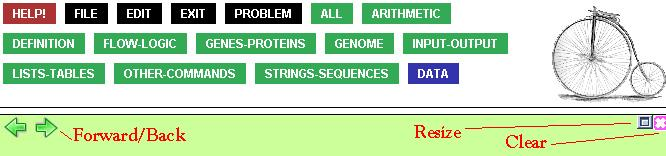
Moving to the far right one sees the resize icon.
It's easy to clear the workspace if things get too cluttered,
by either clicking the Clear icon, the pink box in the upper right corner,
or by selecting 'Clear Workspace' from the File menu.
A convenient way of freeing up space within the Workspace is using
Collapse.
You can collapse entire function boxes:
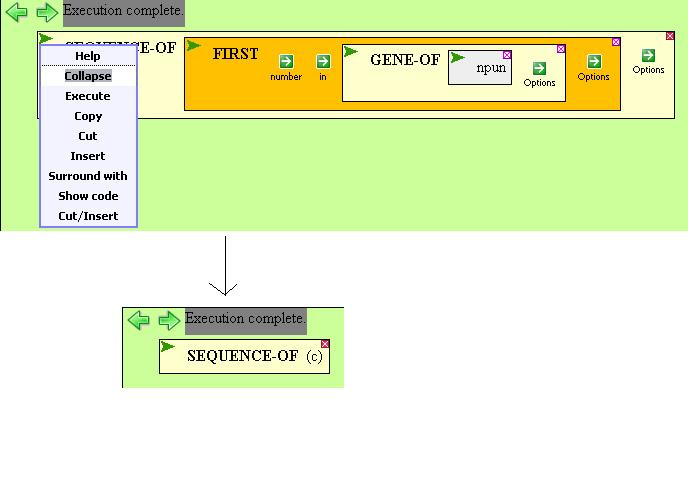
and you can collapse optional arguments:
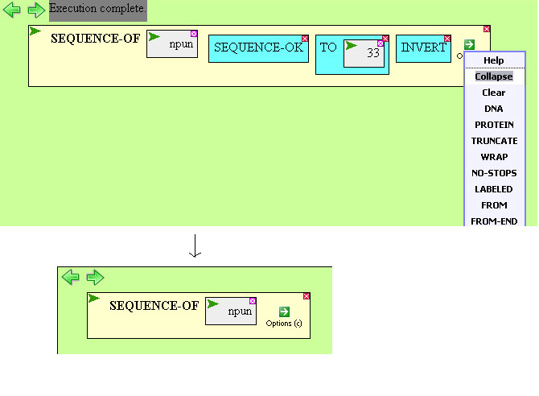
You can uncollapse things by selecting 'Expand' in the same menu
you found collapse.
Please note that the Save and Restore workspace options are no longer used.
If you have anything valuable saved in a workspace, resave it as described
below.
The File menu contains options to save and restore 'user sessions', meaning
the workspace, the results area, any variables you've created with ASSIGN or DEFINE,
and any functions you've created with DEFINE-FUNCTION.
Give your user session a descriptive name when saving it so that you
can easily recognize it when you go to restore your session via the File menu.
Saving sessions is useful because the system may be reinitialized
between one of your sessions and the next, and your work would otherwise be
lost.
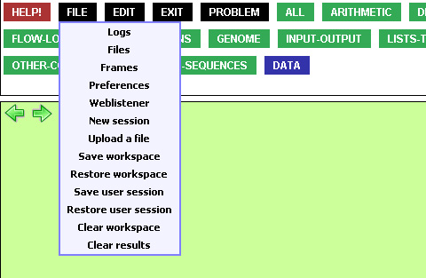
Moving things around
Both holes and functions have pulldown menus, and we refer to this
group as 'nodes'. The pulldown menus have options helpful
in moving around blocks of code.
There are lots of ways to move boxes around in the workspace.
Moving boxes is safe -- you won't lose any information you've typed in --
and useful for that same reason.
Functions can be arguments to other functions. The inverse of passing a
function as an argument is the use of the SURROUND option in the node's
pulldown menu.
You can surround a function around any node, making it the first
argument to whatever function you select.
Clicking this option causes a red box to appear around the node to be surrounded.
Then you select a function from the palette.
It is also easy to do the opposite, using UNSURROUND.
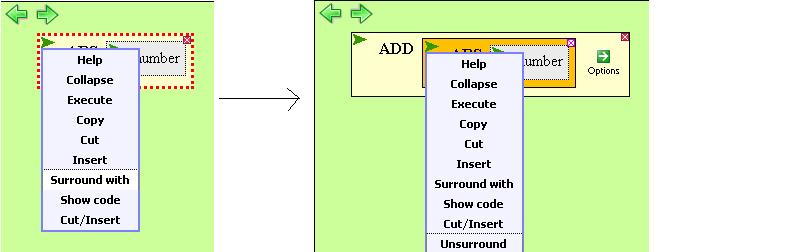
Using the pulldown menu, nodes can be copied
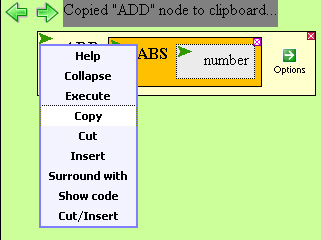
or cut
.
You can also select a box and use the keyboard
shortcuts Ctrl+C to copy and Ctrl+X to cut, instead of using
the pulldown menu.
In each case, note the Mode line telling you what has been copied or cut.
These values can then be pasted directly to the workspace
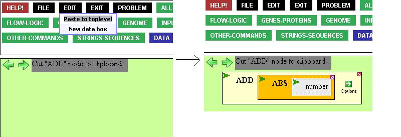
or into an empty hole.
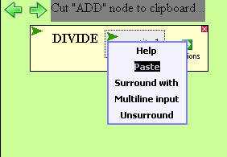
You can select an open hole and use the keyboard shortcut
Ctrl+Z to paste into the hole, or, with nothing selected,
use Ctrl+Z to paste to toplevel.
We can also INSERT a node into an empty hole. Click the empty hole,
then select 'Insert' from the pulldown menu of the node you wish to copy over.
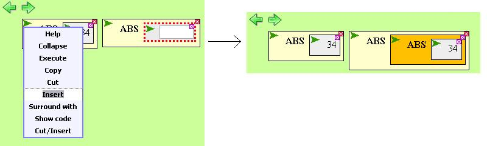
To insert a node as well as cut it, select 'Cut/Insert'. Note the mode line.
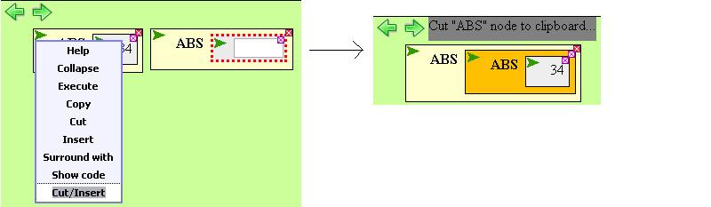
Be sure to check out the Function and data boxes page for more useful information.
It is also possible to reverse the order of boxes in the workspace.
This is useful if you have a lot of toplevel boxes and they take up
more than a screen-full of workspace area. New toplevel boxes you create
will then get placed in the upper left rather than at the bottom of your
workspace.
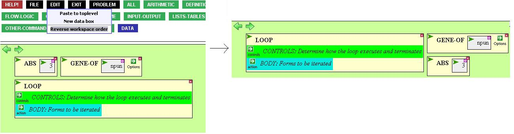